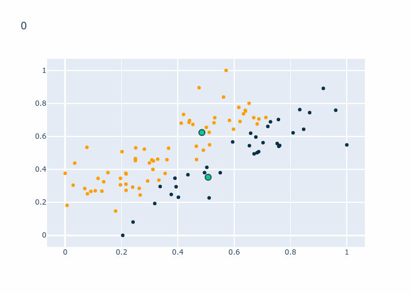

Clustering
Contents
Clustering¶
Si vous vous rappelez bien du chapitre “Eléments de définition”, il y a trois types principaux de Machine Learning; Supervisé, non supervisé et par renforcement. Jusqu’à maintenant nous n’avions que des cas d’apprentissage supervisé (nous avions les labels), il est donc temps de parler de l’apprentissage non-supervisé (nous n’avons pas les labels).
Imaginons que nous avons des images de chiens et de chats qui ne sont pas étiquettées (“Sans labels” dans l’image). Une solution serait de payer des gens pour ajouter les labels, mais elle est couteuse en temps et en argent. Une autre est d’utiliser du clustering. Cette approche va essayer de créer des groupes (clusters) en utilisant les données (“Avec labels” dans l’image).

Une idée serait de partir du principe que les données de même classe (chiens et chats) sont proches dans l’espace définit par les pixels de l’image. Pour les regrouper, nous pourrions avoir deux points, un pour les chiens et un pour les chats. Nous classifierons l’image en fonction du point duquel elle est le plus proche. La question est donc: Comment trouver ces points?
La réponse est simple, en utilsant Kmeans!
Kmeans¶
L’algorithme se base sur ce qu’on appel des centroids, ce sont des points qui seront placé au milieu des clusters. Chaque échantillon fait partie de la catégorie dont le centroid est le plus proche. La procédure se passe en deux parties
Attribution des échantillons aux clusters
Mise à jour des centroids
En détail¶
Afin de nous faciliter la tâche, nous allons introduire une matrice binaire \(z\) qui est de taille \(N\times K\), \(N\) détermine le nombre de points de données et \(K\) le nombre de clusters que nous cherchons. De cette façon, l’entrée \(z_{1,1}=0\) voudra dire que \(x_1\) n’est pas dans le cluster 1, et \(z_{1,2}=1\) représente l’appartenance du point \(x_1\) au cluster 2. Nous avons donc la contrainte qu’il ne peut y avoir que une entrée qui vaut 1 et le reste doit être 0, mathématiquement, cela donne \(\sum_k z_{n,k} = 1\).
Maintenant que cela est clair, nous pouvons (enfin) décrire l’algorithme.
Les centroids sont intialisé arbitrairement. Ensuite nous calculons la distance entre chaque point et les centroids. Admettons que pour le premier point, le second centroid est le plus proche alors son entrée \(z_{0,1}\) (les indexs commencent à 0) devient 1. Une fois la matrice \(z\) mise à jour, nous pouvons calculer les coordonnées de chaque centroid en prenant la moyenne des coordonnées des points qui lui sont attribués:
Ici, \(z\) nous permet de suivre simplement les attributions et de mettre les coordonnées à jour. En effet, si \(z_{n,k}=0\) alors il ne sera pas pris en compte dans la moyenne et si c’est 1 alors on le prends en compte. Une fois les centroids mis à jour, nous recomençons la phase d’assignation en calculant les distances.
Le GIF qui suit permet de voir l’évolution de \(z\) en regardant les couleurs des points ainsi que les centroids en bleu.

L’algorithme
On initialise les centroids \(\mu_n\). (Pour l’instant nous le faisons aléatoirement)
On attribue le cluster de chaque données \(x_n\) au centroid le plus proche et remplissons la matrice \(z\).
Comme avec Knn. nous pouvons prendre la mesure de distance qui nous convient le mieux. Dans notre cas nous utiliserons l’euclidienne.On met les centroids à jour en calculant la moyenne des points présent dans le cluster : \(\mu_k = \frac{\sum_{n=1}^N z_{nk}\textbf{x}_n}{\sum_{n=1}^N z_{nk}}\)
On retourne au point 2, jusqu’à ce que \(z\) ne change plus.
Ce problème peut-être décrit par une fonction de couts que nous voulons minimiser:
La partie du haut représente le but; minimizer la distance entre les centroids \(\mu_k\) et les données qui y sont liées. Ainsi, \(z_{n,k}\) sera 1 si \(x_n\) appartient au centroid \(\mu_k\) et la distance sera prise en compte. Si \(z_{n,k}\) est 0, alors la distance ne sera pas prise en compte car \(x_n\) appartient a un autre centroid. La partie du bas représente les contraintes, la première dit que les valeurs dans \(z\) doivent être soit 0 soit 1. La deuxième dit que seulement un centroid peut être attribué à un point de donnée.
Le but est de rendre la somme des distances la plus petite possible. Kmeans va converger à chaque fois mais vu que les centroids sont initilisés aléatoirement et que le problême n’est pas convex (une seule solution) chaque fois que nous lançons Kmeans nous aurons potentiellement une solution différente.
Soucis et Solutions¶
Il y a deux problèmes majeurs, comment déterminer le nombre de clusters. Dans certains cas nous avons énorméments de données sans labels et il est impossible de déterminer le nombre de cluster présent. Le deuxième est l’initialisation des centroids. Vu que l’initilisation a un impact majeur sur la solution finale, il faut le faire de manière intelligent sans risquer de trop biaiser le résultat.
Initlisation des centroids¶
Il existe plusieurs approches plus ou moins efficaces comme l’initilisation aléatoire dans une certaine “zone”, prendre \(K\) points dans les données et utiliser leur position comme centroid. Dans les deux cas, nous avons potentiellement des centroids très proche l’un de l’autre, ce qui ralentit la convergence. L’approche la plus efficace (à ce jour) se nomme kmeans++ et est celle utilisée par la libraire Scikit-Learn.
L’idée est assez simple, nous choisissons un point dans \(X\) aléatoirement et utilisons ses coordonnées comme coordonnées pour \(\mu_1\). Ensuite nous trouvons le point le plus éloigné de \(\mu_1\) et l’utilisons pour déterminer \(\mu_2\). Puis, nous trouvons le points le plus éloigné de \(\mu_1\) et \(\mu_2\), etc.
Cette approche nous donne une approximation \(O(logK)\) de la réponse finale.
Choix du nombre de cluster¶
Il existe plusieurs approches, celle décrite ici est basé sur ce qu’on appele la variance intra-cluster. La variance d’un cluster est déterminé par la distance moyenne entre un centroid et les points qui y sont liée. On peut la calculer en utilisant cette formule:
\(|\mu_k|\) est le nombre de points liée au centroid \(\mu_k\), ce facteur nous permet de normaliser le résulat de façon à être entre 0 et 1. La somme calcule la distance total entre un centroid et les points qui sont liée à lui.
La variance total \(W\) est la somme de tous les \(W_k\).
Le but est de choisir le nombre de cluster \(K\) qui minimise \(W\).
Étant donnée que nous n’avons pas les labels, il n’est, la plupart du temps, pas possible d’évaluer un algorithm de clustering. Il faudra soit lui faire confiance ou regarder par soit même. De plus, on sait que Kmeans va toujours converger, il va donc toujours donner une infomation. Dans le cas des images de chien et de chat, il trouvera autant de cluster qu’il y a d’images si on le lui demande. Il faut donc être prudent lors de l’utilisation de l’algorithm.
Limites¶
Bien que puissant et pratique, Kmeans n’est pas parfait.
Affectation stricte¶
Kmeans fait de l’affectation souple, c’est à dire qu’il détermine si un point appartient ou pas dans une certaine catégorie. Ceci peut-être problématique dans le cas où un point est a équidistance entre deux centroids. La façon dont on règle ce problème peut avoir une réel importance sur la performance du modèle. Imaginons, que nous voulons déterminer deux catégories de maladies dont l’une est bénine et l’autre mortel. Le choix de classifier un point comme bénin ou mortel ne peut pas se faire aléatoirement.
Dans ce cas nous préfèrerons utiliser de l’affectation souple. Cette approche donne une probabilité qu’un point appartient à une catégorie, ce qui nous permet de faire une meilleure analyse et interprétation du modèle. Si on reprend l’exemple d’au dessus, si un point a une probabilité de 49% de posséder la maladie mortel et 51% de posséder la maladie bénine, on pourrait préfèrer classifier le patient comme portant la maladie mortel afin de réduire le risque de faux négatifs.
Le modèle de base et le plus utilisé est le Gaussian Mixture Model. Ce modèle part de l’hypothèse que les données sont généré par des distributions normales. Il va donc essayer de trouver le variance et la moyenne de ces distributions, ce qui permet de déterminer la probabilité qu’une point appartient à une catégorie.
Malédiction de la dimensionnalité¶
Comme nous l’avosn vu dans le chapitre précédent, les modèles basé sur le calcul de distance souffrent de la maladie de la dimenstionalité. Ainsi, Kmeans ne fonctionnera pas ou moins bien quand on utilise beaucoup de données. Il est relativement facile de faire une analyse statistiques des données quand nous avons les labels et de filtrer les attributs. Malheureusment, ce n’est pas possible quand on utilise Kmeans. Nous n’avons pas de labels donc nous ne pouvons pas obtenir l’utilité de chaque attribut.
La solution est d’utiliser des algorithmes qui ne sont pas autant atteint. Une méthode relativement simple est l’algorithm ClustVarSel. Cependant, nous devons introduire la notions de BIC avant de décrire l’algorithm. Le BIC est un critère qui évalue la complexité du modèle en prenant le résulat du modèle en compte. La complexité du modèle est définie comme le nombre de paramètres à évaluer. ClustVarSel est basé sur des Gaussian Mixture Model et nous devons évaluer \(c_k\) paramètres. \(c_k\) est calculé en suivant le formule qui suit:
\(K\) est le nombre de clusters et \(D\) le nombre de dimensions des données.
Sans entréer dans les détails, chaque Gaussien requiert:
Une matrice de covariance nécessitant \(D \times (D+1)/2\) éléments
Un vecteur de moyenne de \(D\) éléments
Un “mixing weight”
Le point 1 explique \(K\times D \times (D+1)/2\), ensuite nous avons besoin de \(K\) vecteurs de \(D\) éléments et \(K\) mixing weights, ce qui explique \(K\times D+(K-1)\). Nous avons utilisé une astuce pour les mixing weights, vu que la somme de ces poids est de 1, nous pouvons calculer \(K-1\) poids et le dernier est 1 moins la somme des poids. La partie importante pour ClustVarSel est que plus nous ajoutons de features (\(D\)), plus le complexité augumente.
Le BIC est calculé par l’equation qui suit:
\(p(x|.)\) est la probabilité qu’un point appartienne à un clusters.
Nous avons donc un moyen d’évaluer la qualité d’un modèle en prenant en compte le qualité de la prédiction et la complexité du modèle. Le but de ClustVarSel est de selectionner les attributs qui minimisent le BIC. Il existe deux versions, soit on utilise tous les attributs et on en enlèves, ou on commence avec aucun attribut et on les ajoutes.
Dans le cas où on commence avec aucun attribut, ClustVarSel fonctionne en deux étapes:
Ajout éventuel d’un attribut
Suppression éventuel d’un attribut
Dans la première étape, nous entrainons un modèle pour chaque attributs qui n’a pas encore été sélectionné en l’ajoutant à la liste des attributs selectionné. Le modèle est évalué et nous gardons l’attribut qui a le BIC minimum. Dans certains cas, ajouter un attribut ne change pas ou augumente le BIC, dans ce cas, nous n’ajoutons pas d’attributs.
Ensuite, si nous avons plus de 1 attribut, nous entrainons un modèle pour chaque attribut sauf que cette fois nous retirons un attributs. Si le BIC est meilleur en retirant un attribut, nous le retirons.
Donc si nous avons selectionné \(n\) attributs et qu’il nous en reste \(i\). La phase d’ajout requière \(n+i\) entrainements avec chaque \(n+1\) éléments. La phase de suppressions requiert \(n\) entrainements avec \(n-1\) éléments.
Cette approche nous permet de faire de la sélection d’attributs. Malheureusement elle requiert une certaine puissance de calculs et nécessite d’être lançé plusieurs fois afin de stabiliser la selection. De plus, cette méthode souffre du même problème que Kmeans, elle va toujours trouver un résulats, peut-importe le nombre de clusters. Si nous ne savons pas combien de cluster nous avons, nous devons lancer le modèle plusieurs fois pour chaque nombre de clusters.
À retenir¶
Un algorithm de clustering nous donnera toujours une solution, même si ce n’est pas la bonne.
Le choix de l’initialisation des centroids et du nombre de cluster est primordial.
Il n’y a aucun moyen de tester l’algorithm, nous devons donc nous fier aux scores tels que la variance intra-cluster ou le BIC
Le clustering dépend de l’initialisation qui est stochastique, il est courant de faire tourner l’algorithm plusieurs fois afin de stabiliser le résultat.
Implémentation¶
L’implémentation se fera en plusieurs parties. Nous allons d’abord implémenter le modèle et le tester. Ensuite nous implémenterons l’intra cluster variance afin de déterminer le nombre de clusters à utiliser.
# L'implémentation requiert seulement numpy. plotly est utilisé pour les graphiques.
import numpy as np
import plotly.express as px
import plotly.graph_objects as go
Une fois numpy importé, nous devons générer les données. L’hypothèse pour utiliser Kmeans est que les données d’une même catégorie sont proches dans un espace cartésien. Nous devons donc générer nos données en suivant cette hypothèse. Pour ce faire, nous allons utiliser une distribution normal avec une variance de 0.55. La moyenne pour la catégorie 0 est de 0 et de 1 pour les 1. Nous pouvons déterminer le nombre de données que nous voulons.
elements = 50
random_state = 42
K = 5
def generate_data(elements, random_state):
rng=np.random.RandomState(random_state)
classes_x = rng.normal(0, 0.6, (2,elements))
classes_y = rng.normal(1, 0.6, (2,elements))
labels = np.concatenate((np.zeros(elements), np.ones(elements)))
dset = np.zeros((2,elements*2))
dset[0] = np.concatenate((classes_x[0], classes_y[0]))
dset[1] = np.concatenate((classes_x[1], classes_y[1]))
return dset, labels
Pour l’implémentation, nous allons suivre le même pattern que lors de l’implémentation de KNN. Vu que les deux algorothmes dépendent de la distance, leurs implémentation est relativement similaire. Afin de simplifier le code, les centroids correspondent à des points choisit au hasard.
class Kmeans:
def __init__(self, K):
self.K = K
self.centroids = None
# Fonction utilisé pour entrainer le modèle
def fit(self, data):
# Point 1: Initilisation des centroids
self.centroids = data[np.random.choice(len(data), self.K, replace=False)] #np.random.uniform(np.min(data), np.max(data), size=(self.K, len(data[0])))
prev_z = None
curr_z = None
while type(prev_z) == type(None) or (prev_z != curr_z).any():
prev_z = curr_z
curr_z = np.zeros((len(data), self.K))
# Point 2: On calcule les distances et on remplit z
for ind_point, dpoint in enumerate(data):
dist = np.zeros(self.K)
for ind_centr, centroid in enumerate(self.centroids):
dist[ind_centr] = self.distance(dpoint, centroid)
curr_z[ind_point][np.argmin(dist)] = 1
# Point 3: Mise à jour des centroids
for ind_centr, centroid in enumerate(self.centroids):
new_centr = np.zeros(len(centroid))
for dim in range(len(centroid)):
new_centr[dim] = np.dot(curr_z[:, ind_centr],data[:,dim])/sum(curr_z[:, ind_centr])
self.centroids[ind_centr] = new_centr
# Fonction appelé pour prédire
def predict(self, data_point, get_dist=False):
preds = []
dists = []
for dp in data_point:
distances = []
for point in self.centroids:
distances.append(self.distance(dp, point))
preds.append(np.argmin(distances))
dists.append(np.min(distances))
if get_dist:
return np.array(preds), np.array(dists)
else:
return np.array(preds)
# Calcul de la distance
def distance(self, x_new, x):
return np.dot(x_new-x, x_new-x)
Maintenant que le modèle est implémenté, nous pouvons l’essayer.
data, label = generate_data(elements, random_state)
data[0,:] = (data[0,:]-min(data[0,:]))/(max(data[0,:])-min(data[0,:]))
data[1,:] = (data[1,:]-min(data[1,:]))/(max(data[1,:])-min(data[1,:]))
kmeans = Kmeans(2)
kmeans.fit(data.T)
'''
-- Plot --
'''
fig0 = px.scatter(x=data[0,:], y=data[1,:], color=kmeans.predict(data.T).astype(str), color_discrete_sequence=["rgb(2,48,71)", "rgb(255,158,2)"])
fig1 = px.scatter(x=kmeans.centroids.T[0,:], y=kmeans.centroids.T[1,:], color=["Centroid 0","Centroid 1"], symbol_sequence=["square"], color_discrete_sequence=["rgb(2,48,71)", "rgb(255,158,2)"])
fig1.update_traces(marker=dict(size=10,
line=dict(width=2,
color='DarkSlateGrey')),
selector=dict(mode='markers'))
fig2 = go.Figure(data=fig0.data + fig1.data)
fig2.show('iframe')
Nous pouvons voir que les centroids semblent être bien placé, qu’en est t’il de la réalité? Nous allons tricher un peu, nous avons les labels donc nous savons quels points sont ensemble et ceux qui ne le sont pas. De plus nous savons que les 50 premiers points et les 50 derniers points forment un groupe. Il nous suffit de faire la somme des deux groupes, dans le meilleur des cas nous aurons un groupe qui est 50 (tous des 1) et l’autre 0 (tous des 0).
for i in range(10):
tmp_model = Kmeans(2)
tmp_model.fit(data.T)
predictions, distance = tmp_model.predict(data.T, True)
print(f"{i} -> Group1: {np.sum(predictions[:50])} Group2: {np.sum(predictions[50:])}")
0 -> Group1: 47 Group2: 10
1 -> Group1: 47 Group2: 6
2 -> Group1: 3 Group2: 44
3 -> Group1: 47 Group2: 6
4 -> Group1: 47 Group2: 10
5 -> Group1: 47 Group2: 6
6 -> Group1: 3 Group2: 44
7 -> Group1: 3 Group2: 44
8 -> Group1: 3 Group2: 44
9 -> Group1: 3 Group2: 44
Nous pouvons voir que les clusters ne sont pas les mêmes à chaque essai alors que les données restent inchangé. Aussi, vous pouvez voir que les clusters ont des tailles différentes. Maintenant, essayons avec des nombre de clusters différents.
for k in [2,3,4,5]:
tmp_model = Kmeans(k)
tmp_model.fit(data.T)
predictions, distance = tmp_model.predict(data.T, True)
total = 0
len_groups = np.bincount(predictions)
for i in range(k):
total += 1/len_groups[i]+np.sum(distance[predictions == k])
print(total)
0.04079967360261118
0.1686639772187945
0.16309523809523807
0.25583206203915587
Nous pouvons voir qu’utiliser deux clusters donne la plus petite variance intra-cluster. Cependant nous pouvons voir qu’utiliser 3 clusters donne une variance basse aussi.
Et voilà, maintenant tu sais implémenter et utiliser Kmeans ainsi qu’évaluer sa performance grâce au intra-cluster variance. Tu connais aussi ses problèmes et les possibles solutions.
Sources¶
Le cours “Statistical Learning for Big Data” (MVE441) de Chalmers University of Technology.
Pour ClustVarSel: Maugis, C., Celeux, G., Martin-Magniette M. (2009) Variable Selection for Clustering With Gaussian Mixture Models. Biometrics, 65(3), 701-709.